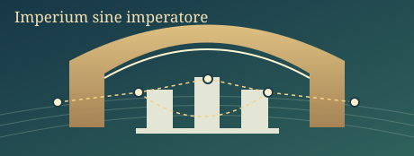
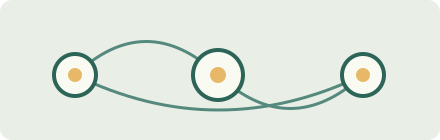

IL TUO PERSONAGGIO
DOSSIER V9 · 1.037 REFERENZE
Fonte V9: ipotesi e schede metodologiche, NON effetti causali osservati.

FOCUS STRATEGICO
Un patto non è un ordine.
Le tue scelte attivano reazioni autonome. Non sei onnipotente.
Obiettivo di questo episodio
Porta avanti il programma senza esaurire fiducia o risorse. Gli altri attori scelgono autonomamente.
CRONACA POLITICO-ECONOMICA
Il destino non aspetta.
Mondo #41 · Preludio istituzionale
IL MONDO È UNO · LA PROSPETTIVA CAMBIA
L’Europa delle decisioni
CIE / Seed 41Navigazione offline · dati verificabili
32 giurisdizioni • geometrie geografiche offline • dati locali non simulati
Fonte: Natural Earth • amministrazione 0 • mondo alternativo fittizioZoom, selezione e viste non modificano lo stato di gioco.
Progetto0/8traguardi realizzati
Consenso—capitale sociale
Legittimità—fiducia procedurale
Rischio—esposizione sistemica
PERCORSO CAUSALE · VERSIONE SINTETICA
Un dossier, sei fasi
Modello fittizio · non evidenza causaleT0 · SceltaT1 · AttuazioneT2 · DistribuzioneT3 · ReazioniT4 · ControlliT5 · Esito
IL TUO APPROCCIO
Due strategie possono generare conseguenze differenti.
POTERE E RELAZIONI · SCELTE REALI
Il tavolo delle trattative
La tua controparte ha obiettivi propri e può rifiutare. Le promesse hanno scadenza, i compromessi generano rischi, uscire costa fiducia.

Accordi e obblighi ancora aperti
DECISIONE IMMINENTE
La tua scrivania
Proponi un patto, ricevi una risposta, scegli e osserva cosa cambia.
Controlla il tempo
Tempo accelerabile: l’avanzamento si interrompe per il rifiuto di un patto, un impegno tradito o uno shock.